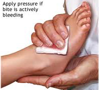
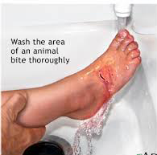
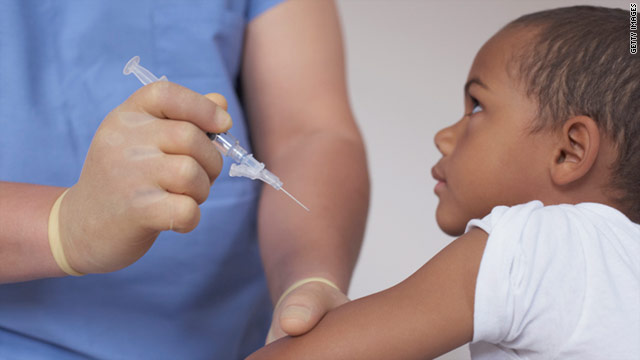
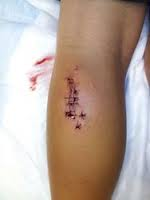
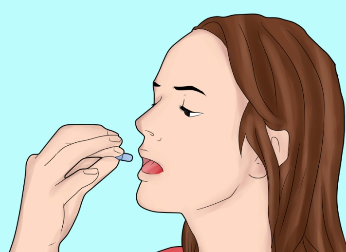

1. Stop Bleeding
- Apply direct pressure until bleeding stops.
- 
2. Clean and Protect
For a wound or superficial scratch from an animal bite:
- Gently clean with soap and warm water. Rinse for several minutes after cleaning.
- 
- Apply antibiotic cream to reduce risk of infection, and cover with a sterile bandage.
3. Get Help
- Get medical help immediately for any animal bite that is more than a superficial scratch or if the animal was a wild animal or stray, regardless of the severity of the injury.
- If the animal's owner is available, find out if the animal's rabies shots are up-to-date. Give this information to your health care provider.
- If the animal was a stray or wild animal, call the local health department or animal control immediately.
4. Follow Up
- The health care provider will make sure the wound is thoroughly clean and may prescribe antibiotics.
- If there is any risk of rabies infection, the health care provider will recommend anti-rabies treatment.
- 
- The person may require stitches, depending on the location and severity of the animal bite.
- 
- The person may also require a tetanus shot or booster.
- The health care provider may recommend ibuprofen or acetaminophen for pain.
- 